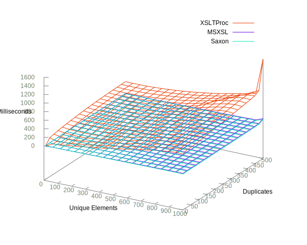
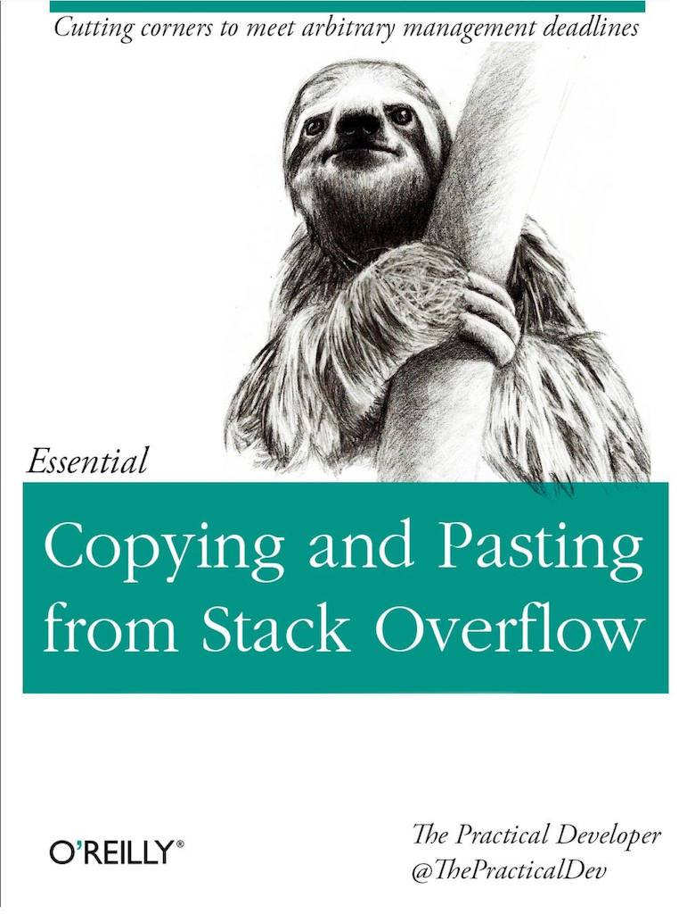
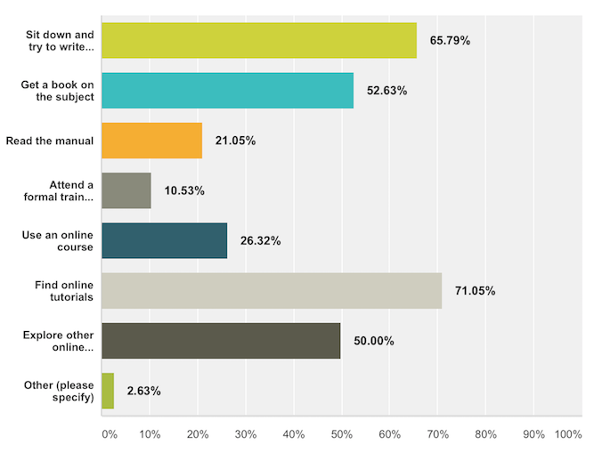
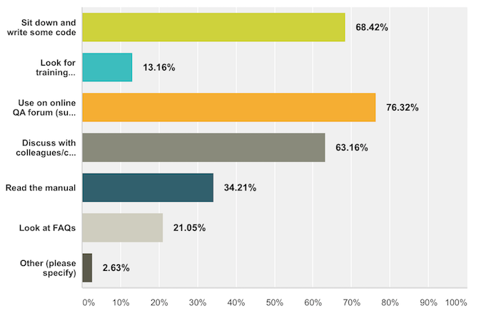
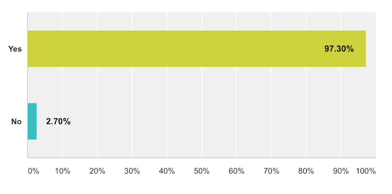

Best Practice or Urban Legend
Teaching XSLT in the Era of Stack Overflow
XML London 2017
Nic Gibson / nicg@corb.as / @CorbasLtd
What's this all about?
- Learning & training has changed
- There is a crisis of authority in training
- How I was completely wrong on the internet
- And what that made me think about
The Story…
 |
|
The Question
Extract unique elements from the input XSLT
For example the input is this:
<root>
<command name="comm1">aa</command>
<command name="comm2">bb</command>
<command name="comm3">cc</command>
<command name="comm3">dd</command>
<command name="comm2">ee</command>
<command name="comm1">ff</command>
<command name="comm5">gg</command>
</root>
The desired output is this:
<root>
<command name="comm1">aa</command>
<command name="comm2">bb</command>
<command name="comm3">cc</command>
<command name="comm5">gg</command>
</root>
You can see that at the output, we don't have repeating tags ,the text values are not important here.
The Answer
<xsl:template match="command">
<xsl:if test="not(
preceding-sibling::command[@name = current()/@name])">
<xsl:copy-of select="."/>
</xsl:if>
</xsl:template>
<xsl:template
match=
"command[preceding-sibling::command[
@name = current()/@name]]"/>
The Failure
- No explanation
- Not the best answer (but accepted)
- Led to an argument with no resolution
- Old references
- FAQ?
Wounded Pride
- Is there data to back that up?
- But Jeni said it…
- Get some data
Let's Generate Some Data
- Generate c.17,000 XML docs
- Vary the number of unique elements
- Vary the number of duplications
- Run stylesheets on those and get some timings
- Run with:
- Saxon 9.7
- xsltproc
- msxsl
Well, That's Not What I Expected

A little more detail…
Predicates

A little more detail…
Grouping

Learning and Training…
|  |
|
How do People Learn?
- The best way to find out is to ask.
- A survey…
- http://bit.ly/2sNBvtu
How Do You learn a New Skill?

How Would You Solve a Problem?

Do You Use Sites Such as Stack Overflow?

What about the mailing list?
What's so Wrong with Stack Overflow?
|
Reputation, reputation, reputation
Implications
- Teaching is a Responsibility
- Answers need Data
- FAQs and Tutorials must be Obvious
- In a niche language any the importance of any resource is amplified.